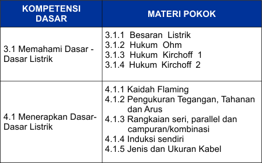
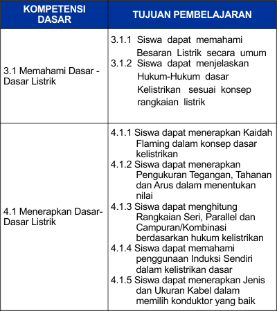

.png)


Materi


Materi 1
BESARAN LISTRIK
Pada materi besaran listrik akan dijelaskan beberapa materi tentang dasar-dasar kelistrikan.
I. Komposisi dari Benda-Benda
Suatu benda bila kita bagi, kita akan mendapatkan suatu partikel yang disebut molekul dan bila kita bagi lagi akan mendapatkan beberapa atom. Semua atom terdiri dari inti yang dikelilingi oleh partikel-partikel tipis yang biasa disebut dengan electron. Inti terdiri dari proton dan neutron dalam jumlah yang sama, kecuali atom hydrogen yang kekurangan neutron.
Istilah atom berasal dari Bahasa Yunani(Atomos), yang berarti tidak dapat dipotong ataupun sesuatu yang tidak dapat dibagi-bagi lagi. Konsep atom sebagai komponen yang tak dapat dibagi-bagi lagi pertama kali diajukan oleh para filsuf India dan Yunani. Pada abad ke-17 dan ke-18, para kimiawan meletakkan dasar-dasar pemikiran ini dengan menunjukkan bahwa zat-zat tertentu tidak dapat dibagi-bagi lebih jauh lagi menggunakan metode-metode kimia. Selama akhir abad ke-19 dan awal abad ke-20, para fisikawan berhasil menemukan struktur dan komponen-komponen subatom di dalam atom, membuktikan bahwa 'atom' tidaklah tak dapat dibagi-bagi lagi. Prinsip-prinsip mekanika kuantum yang digunakan para fisikawan kemudian berhasil memodelkan atom.

Proton adalah atom yang bermuatan positif yang berada di inti atom
Elektron adalah atom yang bermuatan negatif yang mengelilingi inti atom
Neutron adalah atom yang tidak memiliki muatan apapun
Nucleus adalah inti atom.
Proton dan electron mempunyai suatu hal yang sama yaitu muatan listrik (electrical charge). Berikut contoh muatan proton dan elekton pada Copper (tembaga) dan Hydrogen (air).

II. Elektron Bebas
Elektron-elektron yang orbitnya paling jauh disebut elektron valensi. Karena electron yang mempunyai orbit paling jauh dari inti gaya tariknya lemah, maka electron ini cenderung akan berpindah ke atom lain. Tembaga, perak atau logam lainnya, valensi elektronnya akan bergerak hampir bebas terhadap intinya, dengan demikian electron disebut electron bebas.
III. Tipe Listrik dan Sifatnya

Ada dua tipe listrik yaitu: Listrik statis dan listrik dinamis. Listrik dinamis dibagi menjadi arus searah (DC/Direct current) dan arus bolak - balik (AC/Alternating Current).
a. Listrik Statis
Bila sebatang kaca (glass rod) digosok dengan kain sutera, glass rod dan sutera menjadi bermuatan listrik, satu bermuatan positif dan satu lagi bermuatan negative.
Tanpa menyentuh kedua benda tersebut dan menghubungkan dengan konduktor, muatan listrik tetap berada pada batang kaca dan kain sutera. Karena tidak terjadi gerakan maka tipe kelistrikan ini disebut listrik statis.
Dalam rumus electron bebas, listrik statis adalah suatu keadaan dimana electron bebas sudah terpisah dari atomnya masing-masing, tetapi tidak bergerak dan hanya berkumpul diatas permukaan benda.
b. Listrik Dinamis

Listrik dinamis adalah suatu keadaan dimana terjadinya pergerakkan dari electron -elektron bebas melalui suatu konduktor.
Listrik arus searah (DC) adalah bila electron-elektron bebas melalui suatu konduktor.
Listrik arus bolak balik (AC) adalah bile electron-elektron bebas bergerak dengan arah yang bervariasi.

IV. Arus Listrik
a. Arus Listrik

Bila kita menghubungkan battery dan lampu dengan kabel tembaga, maka lampu akan menyala. Arus listrik mengalir dari positif ke negative, tetapi electron mengalir dari negative ke positif.
b.Satuan Pengukuran Arus Listrik
Besar Arus listrik yang mengalir melalui konduktor adalah sama dengan jumlah electron bebas yang melewati penampang konduktor setiap detik. Arus listrik dinyatakan dengan I (insensity) sedangkan besar arus listrik dinyatakan dengan satuan ampere (A).
Satu ampere sama dengan 6,25 x 1018 elektron bebas (1 coloumb) yang melewati konduktor tiap detik atau dirumuskan coloumb/detik.

c. Kejadian-Kejadian yang disebabkan Oleh Arus LIstrik
Bila arus mengalir pada konduktor atau elektrolit akan menyebabkan tiga kejadian:
1)Pembangkit panas, contohnya: headlight, cigarette lighter,dll.
2)Aksi kimia terjadi pada elektrolit battery yang memungkinkan arus dapat mengalir
3)Pembangkitan medan magnet, bila arus listrik mengalir pada kumparan(relay, solenoid,dll)
Pengukuran Arus
Untuk Mengukur Arus digunakan Multimeter/AVOmeter yang bernama Ampere Meter
Cara mengukur arus pada rangkaian adalah dengan memutus rangkaian dan menyambungkan secara seri
 Mengukur Arus
Mengukur Arus
V. Tegangan Listrik
a. Uraian
Bila dua buah tangki air yang berbeda tingginya dihubungkan oleh pipa, air akan mengalir dari tangki yang lebih tinggi ke tangki yang lebih rendah. Hal ini disebabkan oleh adanya head (perbedaan tinggi) sehingga terjadi perbedaan tekanan (beda potensial).
Hal yang sama juga terjadi, bila bila lampu dihubungkan dengan battery oleh kabel.


Hal ini disebabkan oleh adanya potensial tinggi pada terminal positif dan potensial rendah pada terminal negative battery (beda potensial), dan tegangan listrik menyebabkan arus listrik akan mengalir dan lampu menyala. Tegangan listrik ini disebut dengan voltage.
b. Satuan Pengukuran Tegangan Listrik
Satuan tegangan listrik dinyatakan dengan volt (V)
Satu volt adalah tegangan listrik yang dapat mengalirkan arus sebesar 1 ampere pada konduktor dengan tahanan 1 Ω

Pengukuran Tegangan
Alat yang digunakan untuk mengukur tegangan adalah Voltmeter
Dalam menggunakan Multimeter/AVOmeter pastikan selektor berada di posisi Voltmeter DC(Direct Current)(untuk Aki) dan AC(untuk Tegangan PLN)
Mengukur TeganganVI. Tahanan Listrik
a. Konduktor, Semi Konduktor, dan Isolator
Dalam hal tahanan terhadap aliran listrik, maka benda-benda digolongkan ke dalam tiga kategori.
1)Konduktor
Konduktor adalah material (benda-benda) yang dapat dialiri arus dengan mudah (emas, perak, tembaga, logam).
2)Semi Konduktor
Semi Konduktor adalah material dimana arus listrik dapat mengalir tetapi tidak semudah konduktor (silikon, germanium).
3)Isolator
Isolator adalah material yang tidak dapat dialiri arus sama sekali (karet, kaca, plastic,dll)
b. Tahanan Listrik

Tahanan listrik(hambatan listrik) adalah sesuatu yang dapat mengurangi arus listrik. Arus listrik yang mengalir melalui konduktor akan mendapatkan hambatan atau tahanan dari kawat penghantar (konduktor) itu sendiri. Besarnya hambatan listrik diukur dengan satuan Ohm.
c. Satuan Pengukuran Tahanan Listrik
Tahanan listrik dinyatakan dengan resistance (R) dan satuan ohm (Ω). Satu ohm adalah tahanan yang mampu menahan arus yang mengalir sebesar 1 A dengan tegangan 1 Volt.

d. Hubungan Antara Diameter dan Panjang Konduktor dengan Tahanan
Tangki-tangki dengan ketinggian sama tetapi dihubungkan oleh pipa -pipa dengan diameter berbeda. Meskipun keteinggiannyab sama, tetapi air akan lebih mudah mengalir pada tangki-tangki yang dihubungkan dengan pipa yang lebih besar.
Kejadian ini juga berlaku untuk arus listrik, dimana arus listrik (electron) lebih mudah mengalir pada kabel yang lebih besar.

Bila arus listrik mengalir pada jarak yang jauh (kabel yang panjang), maka tahanan akan menjadi lebih besar
Kesimpulannya, tahanan listrik pada suatu konduktor akan berbanding lurus dengan panjang konduktor dan berbanding terbalik terhadap luas penampang konduktor. Atau singkatnya Semakin panjang kabel, maka tahanan semakin besar. Berbeda dengan luas penampang kabel, semakin besar luas penampang kabel maka tahanan semakin kecil.

untuk membuktikan pernyataan di atas berikut adalah rumus yang bisa membuktikannya:


e. Hubungan Antara Temperature dan Tahanan Listrik
Tahanan listrik pada konduktor akan berubah-ubah dengan adanya perubahan temperature, biasanya tahanan akan naik bila temperature naik.
Bila sebuah lampu dihubungkan dengan battery melalui kawat, dan kawat tersebut kemudian panaskan dengan api, maka lampu akan menjadi redup.
Pengukuran Hambatan
Alat yang digunakan untuk mengukur hambatan atau resistansi adalah Ohmmeter
Saat menggunakan Ohm Meter pastikan objek yang diukur tidak terhubung dengan beban apapun dan untuk multimeter manual atau jarum jangan lupa untuk melakukan kalibrasi atau set nol pada OhmMeter, dengan cara menghubungkan kedua jarum positif dan negatif alat kemudian putar tombol kalibrasi sampai jarum penunjuk segaris dengan skala nol pada indikator pengukuran.
Video untuk memahami Arus, Tegangan dan Hambatan serta Magnet
Silakan Klik tombol dibawah untuk melihat video
Mengukur Tahanan Video akhirMateri 2
Hukum OHM

Hubungan antara arus listrik (I), Tegangan (V), dan Hambatan/tahanan (R) pertama kali diteliti oleh ahli fisika dari Jerman bernama George Simon Ohm (1789-1854). Hasil penelitiannya dikenal dengan nama Hukum Ohm. Hukum Ohm dalam bahasa Inggris disebut dengan "Ohm's Laws" George Simon Ohm mempublikasikan Hukum Ohm tersebut pada paper yang berjudul "The Galvanic Circuit Investigated Mathematically" pada tahun 1827.
Pengertian Hukum Ohm
Hukum Ohm menyatakan: Besarnya kuat Arus(I) yang malalui konduktor antara dua titik berbanding lurus dengan beda potensial atau tegangan (V) di dua titik tersebut, dan berbanding terbalik dengan hambatan atau resistansi(R) di antara mereka (asalkan suhu konduktor tetap).
Rumus matematis :

Gambar di atas menunjukan Segitiga Ajaib dari hukum Ohm.Berikut adalah penjabarannya:
Keterangan:
V= Voltage (tegangan atau beda potensial yang terdapat pada kedua penghantar, satuannya Volt(v))
I= Current (Arus listrik yang mengalir pada suatu penghantar, satuannya Ampere (A))
R=Resistance (Hambatan atau tahanan yang terdapat pada suatu penghantar, satuannya (R))
Berikut merupakan contoh Rangkaian listrik searah penerapan dari hukum Ohm.

Fungsi hukum ohm:
1. Untuk memperkecil arus
2. Untuk memperkecil tegangan
3. Untuk memperoleh nilai resistansi yang di inginkan
Hal yang perlu diingat dalam perhitungan rumus Hukum Ohm, satuan unit yang dipakai adalah Volt, Ampere dan Ohm
Video Hukum OhmLatihan Penafsiran Hk. Ohm
Berikut adalah contoh perhitungan hukum ohm secara otomatis, silakan masukkan angka pada tombol Volt, Ohm, dan Arus yang akan dirubah.
 |
V = 12 V I = 2 A R = 3 Ω |
Contoh Soal
1. Sebuah Rangkaian listrik searah searah dengan tegangan 20V, diberi beban sebesar 10 Ohm. Berapakah nilai Arus Listrik(I)?
Jawab
Masukkan nilai Tegangan yaitu 20V dan nilai Resistansi 10Ohm ke dalam rumus hukum Ohm seperti dibawah ini:
I= V/R
I= 20 / 10
I= 20A
2. Sebuah lampu pijar dinyalakan dengan aki, setelah lampu menyala tegangan lampu terukur 15V, dan kuat arusnya 200mA. Berapa besar hambatan lampu tersebut?
Jawab
Masukkan nilai tegangan yaitu 15V dan nilai arus 200mA(mili Ampere). karena nilai arus yang dibutuhkan dalam bentuk A(Ampere). Maka 200mA dikonversi menjadi A. 200/100= 2A.
R= V/I
R= 15 / 2
R= 7,5 Ω
Materi 3
Hukum Kirchoff 1
Hukum Kirchoff merupakan salah satu hukum dalam ilmu Elektronika yang berfungsi untuk menganalisis arus dan tegangan dalam rangkaian. Hukum Kirchoff pertama kali diperkenalkan oleh seorang ahli fisika Jerman yang bernama Gustav Robert Kirchoff(1824-1887)pada tahun 1845. Hukum Kirchoff terdiri dari 2 bagian yaitu Hukum Kirchoff 1 dan Hukum Kirchoff 2.
Pengertian Hukum Kirchoff 1
Hukum KIrchoff 1 merupakan hukum Kirchoff yang berkaitan dengan arah arus dalam menghadapi titik percabangan. Hukum Kirchoff 1 ini sering disebut juga dengan Hukum Arus Kirchoff atau Kirchoff's current Law (KCL)
Bunyi hukum Kirchoff 1 adalah sebagai berikut:
"Arus total yang masuk melalui suatu titik percabangan dalam suatu rangkaian listrik sama dengan arus total yang keluar dari titik percabangan tersebut."
Arus Masuk = Arus Keluar
Untuk lebih jelas mengenai bunyi Hukum Kirchoff 1, Silakan lihat rumus dan rangkaian sederhana di bawah ini:

Berdasarkan gambar di atas , dapat dirumuskan bahwa:


Berdasarkan Rangkaian di atas dapat dirumuskan bahwa:
Arus pada Percabangan Rangkaian Listrik
Berikut adalah contoh arus yang mengalir pada percabangan rangkaian listrik.

Dari gambar rangkaian listrik di atas, besar arus dapat dihitung dengan menggunakan rumus di bawah ini.

Sehingga nilai arus total yang masuk l1 adalah:

*Penjelasan tentang rangkaian paralel akan dibahas lebih lanjut pada materi analisis rangkaian listrik.
Total ARUS MASUK=Total ARUS KELUAR
Contoh Soal
Contoh Soal hukum Kirchoff 1

Dari rangkaian di atas diketahui bahwa:
l1= 9A
l2= 5A
l4= 18A
Berapakah l3 (arus yang mengalir pada AB)?
Penyelesaian
Dari gambar rangkaian yang diberikan di atas, belum diketahui apakah arus I3 adalah arus masuk atau keluar. Oleh karena itu, kita perlu membuat asumsi awal, misalnya kita mengasumsikan arus pada I3 adalah arus keluar.
Jadi Arus yang masuk adalah :
l2 + l2
= 9A + 5A
=14 A
Sedangkan arus yang keluar adalah:
l4 = 18 A
Sehingga
l3 = l masuk - l keluar = -4A
Karena yang didapat adalah negatif, maka I3 adalah ARUS MASUK sebesar 4A.
Hukum Kirchoff 2 (Kirchoff tegangan)
Hukum Kirchoff 2 merupakan hukum kirchoff yang digunakan untuk menganalisis tegangan (beda potensial) komponen-komponen elektronika pada suatu rangkaian tertutup. Hukum Kirchoff 2 ini juga dikenal dengan sebutan Hukum Tegangan Kirchoff atau KIrchoff's Voltage Law(KVL).
Bunyi Hukum Kirchoff 2 adalah sebagai berikut:
"Total tegangan (beda potensial) pada suatu rangkaian tertutup adalah nol"
Secara matematis, hukum II Kirchoff dapat ditulis:
ΣE = Jumlah GGL sumber arus (V)
ΣIR = Jumlah Penurunan Tegangan (V)
I = Arus Listrik (A)
R = Hambatan (Ω)

Langkah - Langkah Penyelesaian
Langkah-langkah umum penyelesaian analisis rangkaian dengan HUkum Kirchoff II adalah sebagai berikut:
1. Pilih rangkaian untuk masing-masing lintasan tertutup dengan arah tertentu. Pemilihan arah loop bebas, tapi jika memungkinkan diusahakan searah dengan arah arus listrik.

2. GGL bertanda positif jika kutub positifnya lebih dulu di jumpai loop dan sebaliknya GGL negatif jika kutub negatif lebih dulu di jumpai loop.
a. Kutub sumber tegangan yang lebih dahulu dijumpai adalah kutub positif, maka nilai E bertanda positif (+)

b. Kutub sumber tegangan yang lebih dahulu dijumpai adalah kutub negatif, maka nilai E bertanda negatif (-)

3. Kuat arus bertanda positif jika searah dengan loop dan bertanda negatif jika berlawanan dengan loop.
a. Arah loop sama dengan arah arus, maka penurunan tegangan (IR) bertanda positif (+)

b. Arah loop berlawanan dengan arah arus, maka penurunan tegangan (IR) bertanda negatif (-)

Dari rangkaian ABCD diatas, kita dapat menuliskan rumus dasar sesuai dengan arus yaitu:
E= I1R1 + I2R2
Rangkaian dengan satu loop
Pada rangkaian satu loop tertutup, arus listrik yang mengalir adalah sama.

1. Menentukan arah loop dengan arah dari A-B-C-D-A

2. Dengan menerapkan hukum Kirchoff 2 (ΣE+Σ(IR) = 0) dan memperhatikan aturan yang disepakati tentang tanda-tandanya sehingga diperoleh:
-E+I.R1+I.R2 -E+I.R3 = 0 atau
-E -E+ I (R1+R2+R3) = 0 atau
(E1+E2)/(R1+R2+R3)
Rangkaian dengan dua loop atau lebih
Rangkaian yang memiliki dua loop atau lebih disebut juga rangkaian majemuk

Langkah-langkah dalam penyelesaian rangkaian mejemuk ini adalah sebagai berikut:
1. Tetapkan loop beserta arah arus

2. Tulislah persamaan-persamaan arus untuk tiap titik cabang dengan menggunakan Hukum Kirchoff 1
Menurut hukum Kirchoff 1, besar arus pada rangkaian adalah:
I1+I2=I3
3. Tetapkan arah arus pada tiap cabang sesuai dengna persamaan hukum Kirchoff 1.

Langkah terakhir adalah menuliskan persamaan-persamaan untuk setiap loop dengan menggunakan persamaan hukum kirchoff 2
ΣE+ΣIR=0
Loop 1 (aefda)
ΣE+ΣIR = 0
E1+i1.R1+i3.R3=0
Loop 2 (befcd)
ΣE+ΣIR = 0
E2+i3.R3+i2.R2 = 0
Contoh Soal Hukum Kirchoff 2
1. Sebuah rangkaian seperti ditunjukkan pada gambar di bawah ini, tentukan:
a. Kuat arus pada masing-masing cabang

Penyelesaian
Tentukan arah arus pada rangkaian, loop searah jarum jam.

Apabila mengikuti arah loop maka diketahui:
ΣE+ΣIR = 0
(E2-E1)+(I.R) = 0
9-6 = -5I
I = 3/-5 = - 0,6A
2. Suatu rangkaian seperti ditunjukkan pada gambar di bawah, dengan hukum Kirchoff II hitunglah kuat arus pada masing-masing cabang

Penyelesaian:
Perhatikan langkah-langkah penyelesaian yang telah dijelaskan pada materi di atas, sperti:
1. Menentukan arah arus
2. Menentukan arah loop
3. Masukkan hukum Kirchoff arus
4. Masukkan hukum Kirchoff tegangan
5. Menyelesaiakan persamaan yang ada

Loop 1
ΣE + ΣIR
-E + I1.R1 + I3.R3 = 0
-6 + 2I1 + 3I3 =0
2I1 + 3I3 = 6
Loop 2
ΣE + ΣIR
-E + I2.R2 + I3.R3 = 0
-6 + 5I2 + 3I3
Menghitung Kuat Arus pada tiap cabang
Seperti yang kita ketahui bahwa I1 + I2 = I3, maka kita rubah I3 pada hasil perhitungan loop diatas menjadi (I1+I2):


untuk mencari I1 kita gunakan hasil pada Persamaan 1 dengan mengganti I2 dengan hasil di atas
5I1 + + 3I2 = 6
5I1 + + 3.0,387 = 6
5I1 + + 1,17 = 6
5.I1 = 6 - 1,17
I1 = 4,8/5
I1 = 0,96 A
Jadi I3= I1+I2
I3 = 0,39 + 0,96
I3 = 1,35 Ampere
Materi 4
Kaidah Fleming dan Induksi Sendiri
Kaidah Fleming
Jika ada penghantar atau konduktor dililitkan kumparan dan dialiri arus listrik, maka di sekitar penghantar akan timbul medan magnet. Arah medan magnet yang dihasilkan tergantung dari arah arus listrik yang mengalir pada penghantar seperti yang berlandaskan pada kaidah-kaidah berikut ini:
1. kaidah sekrup ulir kanan
a. Arus listrik akan mengalir sesuai arah panah
b. Medan magnet (garis gaya magnet) searah dengan putaran jarum jam
c. Tanda "X" (silang) menunjukan bahwa arus menjauhi kita
d. Tanda "." (titik) menunjukan bahwa arus mendekati kita
2. Kaidah ibu jari kanan
a. kaidah ini digunakan sama seperti kaidah sekrup di atas
b. Ibu jari menunjukkan arah dari arus listrik
c. Keempat jari lainnya menunjukkan arah dari medan magnet
3. kaidah tangan kiri fleeming
a. Ibu jari menunjukkan arah gaya / gerakan konduktor
b. Jari tengah menunjukkan arah arus listrik
c. Jari telunjuk menunjukkan arah medan magnet
4. Medan magnet pada kutub magnet
Bila dua buah kutup magnet N (utara) dan S (selatan) berdekatan maka akan timbul garis gaya magnet yang arahnya dari kutub N ke kutub S
5. kawat yang dialiri listrik
Jika sebuah penghantar/kawat yang berbentuk U dialiri arus listrik seperti di atas maka di sekitar kawat akan timbul medan magnet dengan arah sesuai anak panah.
Bila sebuah penghantar/kawat yang dibentuk U tersebut ditempatkan diantara dua kutub magnet permanen (N dan S) dan kemudian dialiri arus listrik maka, akan timbul medan magnet. Bila medan magnet tersebut berada pada kutub magnet maka di sekitar penghantar terjadi penguatan medan magnet dan akibatnya kawat akan bergerak (kumparan berputar) karena kedua medan magnet tersebut.
Sisi kumparan yang mendekati "." akan terdorong ke atas dan sisi kumparan yang menjauhi "x" akan terdorong ke bawah, sehingga pada sumbu kumparan terdapat gaya saling berlawanan dan kumparan berputar searah putaran jarum jam.
Aturan sekrup mirip dengan hukum tangan kanan yang menggenggam, dimana arah ibu jari menyatakan arah arus listrik mengalir pada kawat. Maka keempat arah jari menyatakan arah dari garis gaya elektromagnet yang ditimbulkan.
Arah aliran arus listrik DC pada kawat penghantar menentukan arah garis gaya elektromagnet. Arah arus listrik DC menuju kita (tanda titik pada penampang kawat), arah garis gaya elektromagnet melingkar berlawanan arah jarum jam. Ketika arah arus listrik DC meninggalkan kita (tanda silang penampang kawat), garis gaya elektromagnet yang ditimbulkan melingkar searah dengan jarum jam (sesuai dengan model mengencangkan sekrup). Makin besar intensitas arus yang mengalir semakin kuat medan elektro-magnet yang mengelilingi sepanjang kawat tersebut.
Video Prinsip Motor DCInduksi Sendiri
Induksi Listrik
Induksi listrik itu adalah fenomena fisika yang apabila pada suatu benda yang tadinya netral atau (tidak bermuatan listrik) menjadi bermuatan listrik karena akibat adanya pengaruh dari gaya listrik atau dari benda yang bermuatan lain dan didekatkan padanya.
a. Induksi Sendiri
Induksi sendiri adalah munculnya tegangan listrik pada suatu kumparan pada saat terjadinya perubahan arah arus. Apabila suatu kawat penghantar berpotongan dengan medan magnet, maka akan terjadi tegangan pada kawat tersebut. Fenomena ini sulit dijelaskan namun sudah diterima sebagai hukum alam yang sangat penting. Terutama untuk menjelaskan kejadian-kejadian pada suatu kawat yang dialiri listrik. Apabila kuat arusnya berubah maka medan yang dihasilkan akan mengembang atau mengecil memotong kawat itu sendiri sehingga timbul gaya gerak listrik pada kawat tersebut. Kejadian seperti inilah yang disebut induksi sendiri.
b. Induksi mutual (Mutual induction)
Apabila arus listrik dialirkan pada salah satu kawat maka akan timbul medan magnet pada setiap penampang kawat. Medan magnet tersebut akan mengembang walaupun hanya dalam waktu yang sangat singkat dan memotong kawat penghantar yang kedua. Pada saat inilah timbul gaya gerak listrik pada penghantar yang kedua yang disebut induksi mutual.
Induksi Mutual dapat di contohkan seperti Koil Pengapian yang mampu merubah tegangan baterai dari 12V menjadi 18000 V. Ini dikarenakan oleh Koil memiliki Kumparan primer dan Sekunder, dimana mereka memiliki jumlah lilitan yang berbeda.
Untuk lebih jelasnya kalian bisa melihat video berikut
Video Prinsip Kerja Koilc. Induksi Elektromagnetik
Kumparan yang dialiri arus listrik berubah menjadi magnet disebut Elektromagnet.
Berbicara tentang magnet tidak terlepas dari pembicaraan tentang listrik. Pernyataan tersebut telah dibuktikan dalam percobaan. Misalnya ; bila sebuah kompas diletakkan dekat dengan suatu penghantar yang sedang dialiri aruslistrik, maka kompas tersebut akan bergerak pada posisi tertentu seperti diperlihatkan pada gambar berikut ini.
Induksi Elektromagnetik pada lilitan kawat di penghantar. Kompas bergerak karena dipengaruhi oleh medan magnet. Ini berarti bahwa gerakan kompas seperti pada percobaan di atas adalah akibat adanya medan magnet yang dihasilkan oleh gerakan elektron pada kawat penghantar.
Ada 3 (tiga) cara yang dapat dilakukan untuk memperkuat medan magnet pada elektromagnet :
1). Membuat inti besi pada kumparan.
Cara ini dilakukan dengan jalan meletakkan sepotong besi di dalam kumparan yang dialiri listrik. Besi tersebut akan menjadi magnet tidak tetap (buatan atau remanen). Karena inti besi menjadi magnet, maka inti besi itu akan menghasilkan medan magnet. Dilain pihak kumparan juga akan menghasilkan medan magnet pada arah yang sama pada inti besi. Hal ini akan menyebabkan terjadinya penguatan medan magnet. Penguatan medan magnet diperoleh dari penjumlahan medan magnet yang dihasilkan oleh besi dengan medan magnet yang dihasilkan oleh kumparan.
2). Menambah jumlah kumparan.
Tiap-tiap kumparan elektromagnet menghasilkan medan magnet. Dengan penambahan jumlah kumparan sudah tentu akan memperkuat medan magnet secara keseluruhan. Kuatnya medan elektromagnet merupakan jumlah dari medan magnet yang dihasilkan oleh masing-masing lilitan.
3).Memperbesar arus yang mengalir pada kumparan.
Besarnya arus yang dialirkan pada kumparan berbanding lurus dengan besarnya medan magnet. Setiap elektron yang mengalir pada penghantar menghasilkan medan magnet. Dengan demikian medan total tergantung dari banyaknya elektron yang mengalir setiap detik atau kuat medan total ditentukan oleh besarnya arus yang mengalir pada kumparan.
Pada Penerapannya Elektromagnetik ini digunakan pada komponen Relay, Alternator pada sistem pengisian, sistem stater, koil, selenoid dll.
Materi 5
Rangkaian Seri, Paralel dan kombinasi(Seri-paralel)

Pada halaman ini kita akan membahas jenis-jenis rangkaian sekaligus menganalisisnya.
Dalam mempelajari kelistrikan terdapat 3 macam rangkaian, yaitu Rangkaian Seri, Rangkaian Paralel, dan Rangkaian Kombinasi(Seri-Paralel). Berbagai jenis rangkaian listrik dibuat berdasarkan kebutuhan pengguna(konsumen) atau produsen
Rangkaian Seri
Rangkaian seri adalah jenis rangkaian listrik yang disusun secara sejajar dimana komponen - komponen dipasang secara berurutan dalam satu jalur.

Arus yang mengalir pada rangkaian seri adalah sama, sedangkan tegangan yang mengalir pada setiap beban berbeda sesuai dengan besar hambatan pada komponen.
Arus pada rangkaian Seri sama (I1 = I2 = I3)
sedangkan tegangan tegangan (V) adalah
Vsumber = Vpada beban A + V pada beban B ...
Karena arus I yang melalui lampu-lampu tersebut sama besar, maka VA = I.RA dan VB = I.RB. Oleh karena itu,
Vsumber = I.RA + I.RB atau Vsumber = I(RA + RB).
Dari segi instalasi rangkaian seri lebih sederhana dan mudah disusun dibandingkan dengan jenis rangkaian paralel.
Kekurangan dari rangkaian seri yaitu apabila terjadi kerusakan pada satu komponen atau salah satu komponen dilepas maka akan berpengaruh pada komponen yang lainnya. Ini terjadi karena semua komponen di pasang dalam satu saluran.
Rumus matematis rangkaian Seri adalah:
Rs = R1 + R2 + R3 + Rn....
Perhatiakan gambar di bawah ini!

Hambatan total dari rangkaian di atas adalah: Rs = R1 + R2
Contoh:
Hitunglah nilai resistor pengganti pada rangkaian di bawah ini!

Penyelesaian:
Rs = R1 + R2 + R3 + R4
Rs = 12 + 8 + 10 + 6 = 36 Ω
Rangkaian Paralel
Rangkaian paralel merupakan jenis rangkaian listrik yang disusun dengan tidak sebaris.

Pada rangkaian ini, input untuk setiap komponen adalah sumber yang sama.
Dari segi instalasi rangkaian paralel lebih rumit bila dibandingkan dengan rangkaian seri.
Kelebihan dari rangkaian paralel adalah apabila salah satu komponen mengalami kerusakan atau dilepas tidak akan berpengaruh pada komponen yang lain dan komponen lain masih berfungsi dengan baik.
Rumus matematis rangkaian paralel adalah:

Perhatikan gambar dibawah ini!

Hambatan total dari rangkaian di atas adalah:
1/Rp = 1/R1 + 1/R2
Contoh:
Hitunglah nilai resistor pengganti pada rangkaian di bawah ini!

1/Rp = 1/R1 + 1/R2 + 1/R3
1/Rp = 1/8 + 1/6 + 1/4
1/Rp = 3/24 + 4/24 + 6/24
Rp = 24/18 = 1,85 Ω
Rangkaian Campuran (Seri-Paralel)
Rangkaian seri-paralel adalah gabungan antara rangkaian seri dan rangkaian paralel.

Gambar. Rangkaian Seri-Paralel
Untuk mencari nilai hambatan (R) total pada rangkaian dapat mengkombinasikan rumus rangkaian seri dan paralel.
Langkah penyederhanaan rangkaian seri-paralel
Langkah pertama untuk menyederhanakan hambatan (R) pada rangkaian seri-paralel adalah dengan menentukan Rtotal dari rangkaian paralel dan rangkaian seri jadikan dalam satu bentuk (dibuat rangkaian seri agar lebih mudah).
Berdasarkan rangkaian diatas, penyederhanaan yang dilakuakan adalah
1. R1 dan R5 (rangkaian seri)
Rs1 = R1 + R5

2. Rs, R2, R3 (Rangkaian Paralel)
1/Rp1 = 1/Rs1 + 1/R2 + 1/R3

3. Rp1 dengan R4(Rangkaian 4 Seri)
Rs2 = Rp 1 + R4

4. Sehingga nilai R total adalah Rs2

Contoh Soal
Hitunglah nilai arus yang mengalir pada rangkaian!

Langkah pertama yaitu menentukan nilai hambatan pengganti atau hambatan total.
Mulailah pada rangkaian paralel dari cabang terkecil.
1/Rp= 1/R1 + 1/R2 + 1/R3
1/Rp= 1/4 + 1/6 + 1/8
1/Rp= 6/24 + 4/24 + 3/24
Rp=24/13 = 1,85 Ω
Cabang Selanjutnya
Rs= Rp + R4
Rs= 1,85 + 5 = 6,85 Ω
Menghitung Arus menggunakan Hukum Ohm
I = V/R
I = 25/6,85= 3,65 A
SILABUS
SILABUS
Dalam silabus ini di cantumkan isi dari materi-materi yang ada pada media pembelajaran TLDO ini.
Indikator
Tujuan Pembelajaran
BANTUAN
Menu bantuan ini adalah menu yang berisikan informasi untuk mengetahui fungsi tiap tombol pada media pembelajaran ini.
Berikut adalah penjelasannya:
Tombol ini terletak di pojok kiri atas, berfungsi sebagai tombol untuk kembali ke menu utama.
tombol ini terletak di bagaian pojok kiri bawah, berfungsi untuk kembali ke menu sebelumnya.
Tombol ini merupakan tombol materi 1 untuk menuju ke materi pertama yang berisikan tentang dasar-dasar kelistrikan dari ataom, arus, tegangan, dan hambatan.

Tombol ini merupakan tombol materi 2 untuk menuju ke isi materi dua yang berisikan tentang hukum Ohm
Tombol ini merupakan tombol materi 3 untuk menuju ke isi materi tiga yang berisikan tentang hukum Kirchoff 1 dan hukum kirchoff 2
Tombol ini merupakan tombol materi 3 untuk menuju ke isi materi tiga yang berisikan tentang analisis rangakaian dasar kelistrikan (seri, paralel, dan kombinasi)
EVALUASI
Halaman Evaluasi terdiri dari 30 soal berbentuk pilihan ganda. Setiap jawaban benar bernilai 10 poin dibagi 3 sehingga apabila semua jawaban benar akan mendapatkan nilai 100 poin. Tidak terdapat tombol kembali pada soal. Diharapkan untuk menjawab dengan hati-hati dan benar. Silakan klik tombol "Mulai" dibawah untuk mengerjakan soal.
Pembahasan
Berikut merupakan pembahasan dari soal evaluasi.
1. jawaban= C. Yunani
(Kata Atom berasal dari Negara Yunani dengan nama Atomos.)
2. Jawaban= C. Proton dan Neutron
(Atom memiliki inti yang disebut dengan Nucleus, dimana di dalam inti atom terdapat Proton(muatan Positif) dan Neutron(muatan netral). Neutron pada inti atom berfungsi untuk membuat Elektron berputar mengelilingi inti atom, jika tidak ada Neutron maka elektron dan proton saling tarik menarik.)
3. Jawaban= B. 1 Ampere
(Sudah dijelaskan pada materi 1 Bagian 4 Arus listrik. Bahwa 1 Ampere = 1 coloumb yang melewati konduktor tiap detik.)
4. Jawaban= A. Tegangan
(Tegangan merupakan suatu pendorong agar arus mampu tersalurkan keseluruh rangkaian.
5. Jawaban= A. Hambatan
(Gambar tersebut merupakan gambar dari Hambatan yang memberikan resistansi pada arus di suatu rangkaian.)
6. Jawaban= D. Ampere
(Satuan SI dari Arus Listrik adalah Ampere. 1A=1C/s.)
7. Jawaban= C. V= I x R
(Dari hukum ohm rumus memang sudah menunjukkan seperti itu. Rumus bisa juga I=V/R atau R=V/I)
8. Jawaban= C. 8 Volt
(Karena v=IxR maka, 2 X 4 = 8 V)
9. Jawaban= B. 0,5 Ampere
(I=V/R maka, 30/60= 0,5 Ampere)
10. Jawaban= D. 0,5 Volt
(dirubah dulu 50 mA jadi 0,05A)
V= I x R
V= 10 X 0,05
V= 0,5 Volt
11. Jawaban= B. I1+I2+I3 = I4+I5
12. Jawaban= 3 Ampere, keluar
Arus Masuk= I1 + I2 = 10 + 5 = 15A
Arus Keluar= I3 + I5 = 5 + 7 = 12A
Jadi arus yang tersisa: (arus masuk=Arus keluar)
15A - 12A= 3A keluar
13. Jawaban= E. 20 Ampere
1/Rp= 1/20+1/20+1/10
1/Rp= 1/20+1/20+2/20
Rp= 20/4= 5 ohm
A= V/R = 100/5 = 20 Ampere
14. Jawaban= A. 1,02 Ampere
Rs= 120Ω+60Ω+36Ω=216Ω
I=V/R=220V/216Ω=1,02A
15. Jawaban= D. ΣE + ΣIR = 0
16. Jawaban= A. 2 Ampere
-V+ I.R1 + I.R2= 0
-V+ I(R1 + R2)= 0
I(R1+R2)=V
I(2+3)=10
I=10/5 = 2A
17. Jawaban= C. 4 Ampere
-V1+I(R1+R2)-V2=0
I(R1+R2)=V1+v2
I(4+2)= 12+12
6I=24
I= 24/6 = 4A
18. Jawaban= B. -2.29
Loop1
V1 + I3 R3 + I1 R1=0
8 I3 + 2 I1 = -24
8 (I1+I2) + 2I1=-24
10I1 + 8 I2= -24 (pers 1)
Loop 2
V2 + I3 R3 + I2 R2=0
8 I3 + 4 I2 =-32
8(I1+I2) + 4 I2 =-32
8 I1 + 12 I2 =-32 (pers 2)
Menyederhanakan persamaan:
10I1 + 8 I2 =-24 }x2
8 I1 + 12 I2 =-32 }x2.5
----------------- -
20I1 + 16I2 =-48
20I1 + 30I2 =-80
----------------- -
.... - 14 I2 =32
I2= 32/-14 = -2,29
19. Jawaban= C. 30 Ohm
1/Rp = 1/20 + 1/20
1/Rp = 2/20
Rp = 10 Ohm
Rs = 10 Ohm + 20 Ohm = 30 Ohm
20. Jawaban= A. 10 Ohm
Rs= R2 + R3 = 30 + 30 = 60 Ohm
1/Rp= 1/R1 + 1/Rs + 1/R3
1/Rp= 1/20 + 1/60 + 1/30
1/Rp= 3/60 + 1/60 + 2/60
Rp = 60/6 = 10 Ohm
21. Jawaban= E.Utara ke Selatan
22.Jawaban= B. Menjauh
23. Jawaban= C. Arah gerak konduktor
24.Jawaban= D. Arus berkurang
25.Jawaban= D. Relay
Arus Elektromagnet digunakan untuk menarik saklar.
26. Jawaban= A. Alternator
27. Jawaban= E.Tembaga
Karena memiliki nilai resistansi paling rendah
28. Jawaban= B. Sama
29. Jawaban= D. Ohm Meter
30. Jawaban= C. Tegangan, Arus dan Hambatan
About App
Kami mengucapkan terimakasih kepada semua pihak yang telah membantu dan mendukung pengembangan media pembelajaran ini. Semoga media ini bermanfaat bagi pendidikan di sekolah baik bagi siswa, guru, lembaga pendidikan maupun untuk tujuan pengembangan.
Kami menyadari bahwa media ini masih jauh dari kesempurnaan sehingga kami membutuhkan kritik dan masukannya untuk pengembangan media selanjutnya.
Tim Pengembang
Putu Desna Andy Pratama
Pendidikan Teknik Otomotif
Universitas Negeri Yogyakarta
Dosen Pembimbing
H. Martubi M.Pd M.T
Pendidikan Teknik Otomotif
Universitas Negeri Yogyakarta